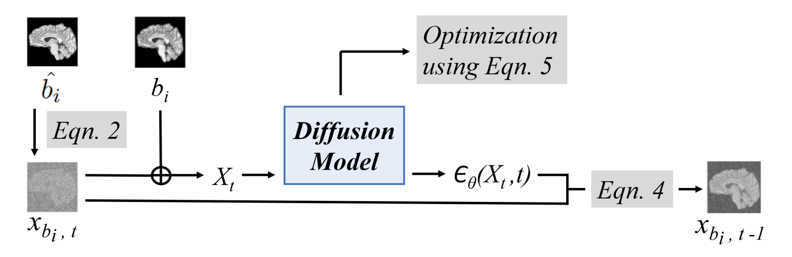
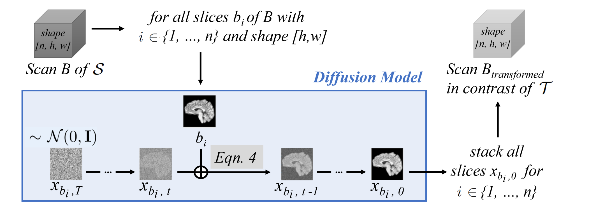

Abstract
Magnetic resonance (MR) images from multiple sources often show differences in image
contrast related to acquisition settings or the used scanner type. For long-term studies,
longitudinal comparability is essential but can be impaired by these contrast differences,
leading to biased results when using automated evaluation tools. This study presents a
diffusion model-based approach for contrast harmonization. We use a data set consisting of
scans of 18 Multiple Sclerosis patients and 22 healthy controls. Each subject was scanned
in two MR scanners of different magnetic field strengths (1.5 T and 3 T), resulting in a
paired data set that shows scanner-inherent differences. We map images from the source
contrast to the target contrast for both directions, from 3 T to 1.5 T and from 1.5 T to 3 T.
As we only want to change the contrast, not the anatomical information, our method uses
the original image to guide the image-to-image translation process by adding structural
information. The aim is that the mapped scans display increased comparability with scans
of the target contrast for downstream tasks. We evaluate this method for the task of
segmentation of cerebrospinal fluid, grey matter and white matter. Our method achieves
good and consistent results for both directions of the mapping.
Keywords:
Diffusion models, contrast harmonization, image-to-image translation
Fig. 1: Overview of our contrast harmonization method. We train a diffusion model using paired data from source contrast S and target contrast T. We translate scan B ∈ S to scan Btransformed that appears in contrast T, allowing better comparability with^B ∈ T in subsequent tasks, such as segmentation.
Contribution
By adapting a Denoising Diffusion Probabilistic Model (DDPM) [1][2] for contrast harmonization, we translate images from a source contrast S to a target contrast T . Considering a pair B ∈ S,^B ∈ T, we map scan B slice-by-slice to scan Btransformed, appearing in the contrast of T, as shown in Fig. 1. We generate consistent three-dimensional (3D) volumes by stacking two-dimensional (2D) slices, allowing us to save memory during image-to-image translation. Compared to the original B, Btransformed presents better comparability with^B from T, with respect to downstream tasks such as segmentation of grey matter (GM), white matter (WM) and cerebrospinal fluid (CSF) using FAST [3]. We achieve good results for both directions. For the equations mentioned in this section we refer to the paper.
Fig. 2: Overview of the training. Anatomical information is given through the concatenation of image bi from B ∈ S with noisy image xbi,t . Xt is used by the diffusion model to predict a slightly denoised image xbi,t-1 from xbi,t using Eqn. 4.
During training, shown in Fig. 2, we pick a random timestep t and create a noisy image from^bi. Since we only want to change the scanner-related image contrast and not any anatomical features, we add anatomical information of our source contrast slice bi through concatenation. The concatenated image then serves as input to our diffusion model that predicts the noise at that time step t. Furthermore, it allows the computation of a slightly denoised image. During sampling, visualized in Fig. 3, the previously trained diffusion model is applied for every slice for every denoising step, whereby anatomical information is again added through concatenation with the source contrast slice. The slices are then stacked to a 3D volume.
Fig. 3: Translation from B ∈ S to Btransformed. Each slice bi of B ∈ S is iteratively denoised by applying Eqn. 4 for steps t ∈ {T, ..., 1}, whereby slice bi is used to add anatomical information through concatenation. The 2D output slices {xbi,0}ni=1 get stacked to Btransformed, showing the input scan B translated to T .
Results
Here we present some selected results. For more results refer to the paper. We compare our results to DeepHarmony (DH) [4] and pGAN [5]. Fig. 4 shows an exemplary coronal slice before and after harmonization for both directions of the mapping. Our DM outperforms DH and pGAN for the mapping from 1.5 T to 3 T and generates good results for the mapping from 3 T to 1.5 T.
Fig. 4: An exemplary coronal slice of a scan B ∈ S, the corresponding ground truth (GT) slice of^B∈ T and slices of its mappings Btransformed in contrast T generated by DH, pGAN and our DM are shown for both mapping directions. The red circles indicate hyperintense regions generated by DH. The blue arrows point at stripe artifacts produced by pGAN.
Cite
BibTeX
@article{durrer2023diffusion,
title={Diffusion Models for Contrast Harmonization of Magnetic Resonance Images},
author={Durrer, Alicia and Wolleb, Julia and Bieder, Florentin and Sinnecker, Tim and Weigel, Matthias and Sandkuehler, Robin and Granziera, Cristina and Yaldizli, Oezguer and Cattin, Philippe C},
journal={arXiv preprint arXiv:2303.08189},
year={2023}
}